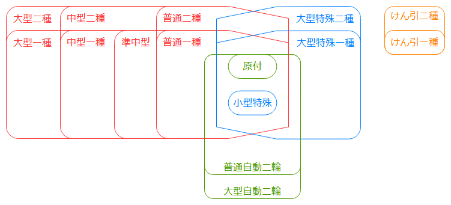
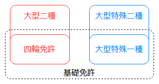

免許計画 最少フル免許への道のり
前回、最少フル免許を目指す方針になったため、いろいろと調査。
ルールと取得順
上位免許を取得している状態だと下位免許の一部取消し申請は行えないため、適当に上位免許を取ってから雑に要らない下位を取消して最少フル免許達成、という方法は使えない。また、変な下位免許を取得してしまうと詰む可能性があるため、取得順をちゃんと検討する必要がある。
上位下位の関係の図を再掲。

受験資格
まずはルールを確認する。道路交通法 第九十六条 参照。年齢だの視力だのは省略している。
なお、「大型免許、中型免許、準中型免許、普通免許」は長いので、以下では「四輪免許」と省略する。
大型二種
以下のいずれかを満たす必要がある。
- 四輪免許又は大型特殊免許を所持しており、かつどれかの経験が3年以上ある
- 他の二種免許を所持している
大型特殊二種
同上。
けん引二種
以下のいずれかを満たす必要がある。
- 「けん引一種」と「四輪免許又は大型特殊免許」をそれぞれ所持しており、かつどれかの経験が3年以上
- 他の二種免許を所持している
大型自動二輪
無し。
取得可能な順番
次に、どのような順番ならルールを満たしつつ最少フル免許になるのかを検討する。
なお、「四輪免許又は大型特殊免許」は長いので、以下では「基礎免許」と省略する。
大型自動二輪
条件もないし、他の免許とも絡まないので、いつでも良い。
けん引二種
二つある条件のうち、前者(けん引一種と基礎免許を所持)を満たそうとするとけん引一種を取らなくてはいけないが、その状態でけん引二種を取得してしまうとけん引一種を一部取消しすることが出来なくなるため、うまくいかない。そのため、後者(他の二種免許を所持)を満たしてから取得することになる。
大型二種、大型特殊二種
これら二つのうち、最初に取る方は前者の条件(基礎免許を所持)を満たす必要がある(けん引二種を含め、まだ他の二種を持っていない状態のため)。
が、そのための基礎免許自体は最少フル免許には不要なものとなるので、可能であればどこかのタイミングで一部取消し申請をしたい。上位免許を取得してしまうと基礎免許を一部取消し申請出来なくなるため、取得している基礎免許の上位免許ではないほうを最初に取得する必要がある。

つまり、以下2パターンのいずれかの方法しかない。
基礎免許として四輪免許を取るパターン
- 四輪免許を取得
- 四輪免許を基礎免許に、大型特殊二種を取得
- 大型二種を取得してしまうと、四輪免許を取り消せなくなる
- 四輪免許を一部取消し申請
- 大型二種を取得(他の二種を所持しているので取得可能)
基礎免許として大型特殊一種を取るパターン
- 大型特殊一種を取得
- 大型特殊一種を基礎免許に、大型二種を取得
- 大型特殊二種を取得してしまうと、大型特殊一種を取り消せなくなる
- 大型特殊一種を一部取消し申請
- 大型特殊二種を取得(他の二種を所持しているので取得可能)
両パターンを図にするとこうなる。

こう見ると、四輪免許と大型特殊一種で左右対称な事が分かる(条件自体は同じだしね)。実際には、期間中に実際に乗れる車の違いなど、利便性に関して大きく異なるが。